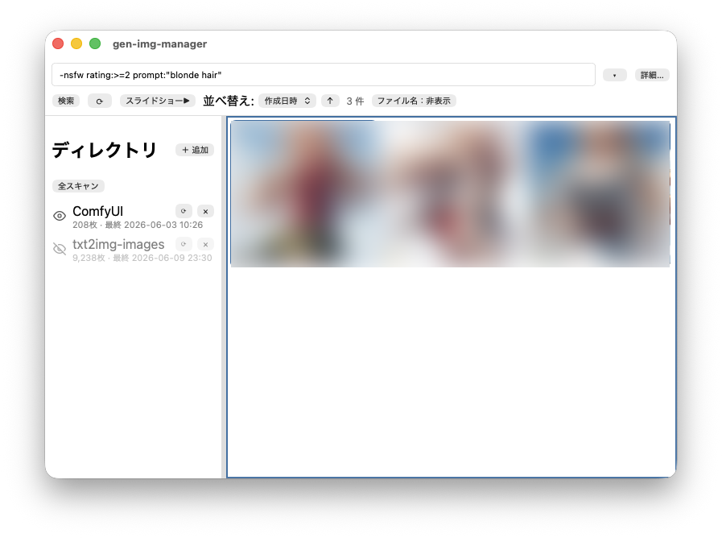

★ ★ ★ ★ ★
GEN-IMG-MANAGER — USAGEAI 生成画像を、検索して、眺めて、選り分ける。
Stable Diffusion WebUI（A1111）や ComfyUI が画像に埋め込んだプロンプト・モデル・Seed などのメタデータを取り込み、ローカルだけで検索・閲覧・レーティングするデスクトップアプリです。ネットワークへの送信はありません。
01はじめに — 3ステップ
- ディレクトリを登録 — 左パネルで画像フォルダを追加します（サブフォルダを含めるかは追加時に選択）。
- スキャン — 登録すると走査が始まり、メタデータの抽出とサムネイル生成が進みます。進捗は左パネルに表示されます。
- 検索・閲覧 — 上部の検索欄にクエリを入力して絞り込み、サムネイルを Enter でビューアに開きます。
NOTE取り込み済みデータはローカルの SQLite に保存されます。ディレクトリを削除しても元のファイルは消えません（DB から登録を外すだけ）。
02画面構成

- 左パネル — 登録ディレクトリの一覧・表示/非表示の切替・スキャン進捗。B で開閉、境界はドラッグで幅変更。
- ツールバー — 検索欄（履歴の自動補完つき）・「詳細…」フィルタダイアログ・ソート（ファイル名 / 作成日 / 更新日 × 昇降順）・再読込
⟳・スライドショー起動・件数表示。 - サムネイルグリッド — 仮想スクロールで大量画像に対応。★でレーティングを表示。右クリックでコンテキストメニュー。
03検索クエリ
空白区切りの語は AND。フィールド指定なしの語はプロンプト等の全文検索に使われます。
prompt:"best quality" rating:>=4 -blurry
forest OR mountain width:>=1024 steps:20..40
created:2025-01-01..2025-01-31 tool:comfyuiテキストフィールド（全文検索）
| 構文 | 対象 |
|---|---|
prompt: | ポジティブプロンプト |
negative: | ネガティブプロンプト |
model: | モデル名 |
filename: | ファイル名 |
sampler: | サンプラー名（部分一致） |
tool: | 生成ツール（a1111 / comfyui） |
数値・日付フィールド
| 構文 | 対象 |
|---|---|
rating: | レーティング 0〜5、none = 未評価 |
width: height: | 画像の幅・高さ（px） |
pixels: | 総ピクセル数 |
steps: seed: | 生成ステップ数 / Seed 値 |
created: modified: | 作成日 / 更新日（YYYY-MM-DD） |
演算子
| 記法 | 意味 | 例 |
|---|---|---|
>= <= > < | 比較 | rating:>=4 |
A..B | 範囲（両端を含む） | steps:20..40 / created:2025-01-01..2025-01-31 |
1,3,5 | 集合（いずれか） | rating:none,1,2 |
- | 除外（NOT） | -blurry / -sampler:euler |
OR | OR 結合（大文字） | forest OR mountain |
"..." | フレーズ一致 | prompt:"best quality" |
クエリを手で書かなくても、ツールバーの「詳細…」からダイアログで同じ条件を組み立てられます。検索履歴は入力欄で自動補完されます（▾ で全履歴）。
04レーティング
グリッド・ビューア・スライドショーのどこでも、1〜5 で★を設定、0 でクリアできます。確認ダイアログはありません。
- レーティング入力モード（メニュー「レーティング」）— 評価作業向けの表示モード。さらに「レーティング後に未入力へ送る」を ON にすると、評価した瞬間に次の未評価画像へ自動で移動します。
- XMP へ自動書き出し — ON にすると、評価のたびに XMP サイドカーファイル（
画像名.ext.xmp）へ書き出します。他のツール（Adobe Bridge 等）とレーティングを共有できます。スキャン時にはサイドカーの値が読み込まれます。
05ビューア
グリッドで Enter（またはダブルクリック）で開きます。I でメタデータパネルを開閉し、プロンプト・モデル・sampler・steps・seed・cfg・ComfyUI ワークフロー（JSON）を確認できます。
ズームモード（メニュー「表示 → ズーム」/ Z で循環）
| モード | 動作 |
|---|---|
| 全体フィット | ウィンドウに収まる最大サイズ（既定） |
| 等倍 | 原寸 100% 表示 |
| Fill | ウィンドウを埋めるように拡大 |
| 任意倍率 | + / - やホイールで自由に拡縮 |
不要な画像は ⌘Delete（Windows: Backspace）で OS のゴミ箱へ移動し、そのまま次の画像へ進みます。
06スライドショー
ツールバーの「スライドショー▶」で、現在の検索結果を別ウィンドウで再生します。表示モード（ウィンドウ / フルスクリーン）はメニュー「表示 → スライドショー」で選択。
- 間隔 — 秒数を指定（既定 5 秒）。次の画像は先読みされるため切替は瞬時です。
- ループ / ランダム — チェックで切替。ランダムはループのたびに並び直します。
- 再生中も 1〜5 / 0 でレーティングできます。眺めながらの選別に便利です。
07キーボードショートカット
アプリ内では ? でいつでもこの一覧を表示できます。
一覧（グリッド）
| キー | 動作 |
|---|---|
| ←→↑↓ | 選択を移動 |
| Home / End | 先頭 / 末尾へ |
| PageUp / PageDown | ページ単位で移動 |
| Enter | ビューアで開く |
| 1〜5 / 0 | レーティング設定 / クリア |
| O | Finder / エクスプローラーで表示 |
| C | パスをコピー |
| B | 左パネルの開閉 |
ビューア
| キー | 動作 |
|---|---|
| ← / → Space | 前へ / 次へ |
| + / - | ズームイン / アウト |
| Z | ズームモード循環 |
| I | メタデータパネル開閉 |
| ⌥⌘F / F11 | フルスクリーン |
| ⌘Delete / Backspace | ゴミ箱へ移動して次へ |
| Enter | 選択して一覧へ戻る |
| Esc | 閉じる |
スライドショー
| キー | 動作 |
|---|---|
| Space | 再生 / 一時停止 |
| ← / → | 前へ / 次へ |
| ⌥⌘F / F11 | フルスクリーン |
| Esc | 閉じる |
08対応形式
| 画像形式 | メタデータの取得元 | 対応ツール |
|---|---|---|
| PNG | tEXt / zTXt / iTXt チャンク | A1111（parameters）/ ComfyUI（prompt・workflow） |
| JPEG / WebP | EXIF UserComment | A1111 形式 |
| XMP サイドカー | 画像名.ext.xmp（または 画像名.xmp） | レーティングの読み書き |
メタデータが無い画像も取り込まれ、ファイル名・サイズ・日付では検索できます。
09Tips
- 新しい画像が出てこない — ツールバーの
⟳（再読込）で差分スキャンします。既存ファイルは再解析されないため高速です。 - メタデータを取り直したい — ディレクトリの「再構築」で、そのフォルダの全画像を削除して取り込み直します（ファイル自体は消えません）。
- ネットワークドライブ — NAS が切断されていても UI は固まりません。オフラインのディレクトリはその旨が表示され、再接続後にスキャンできます。
- 設定は自動保存 — 検索クエリ・ソート・ズーム・スライドショー設定・各種トグルは終了時の状態が次回起動時に復元されます。